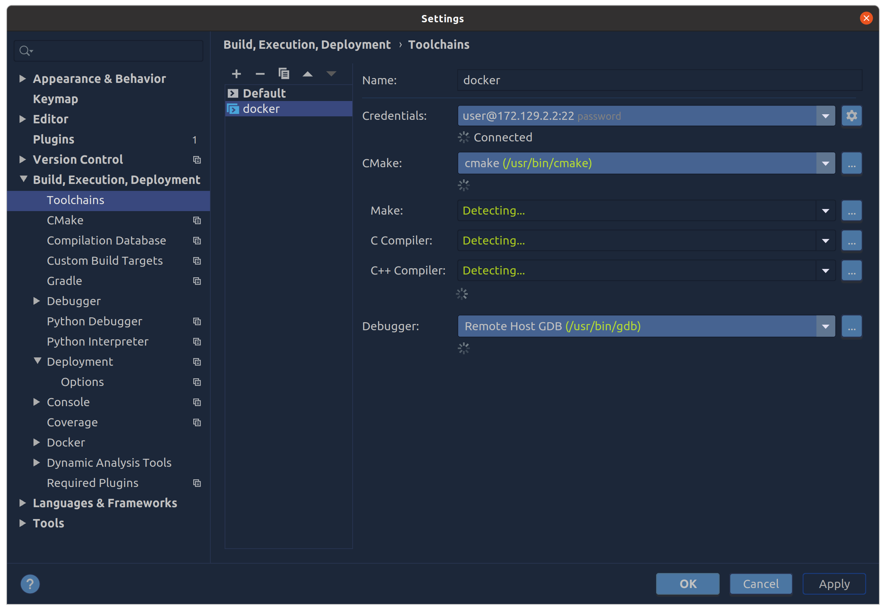
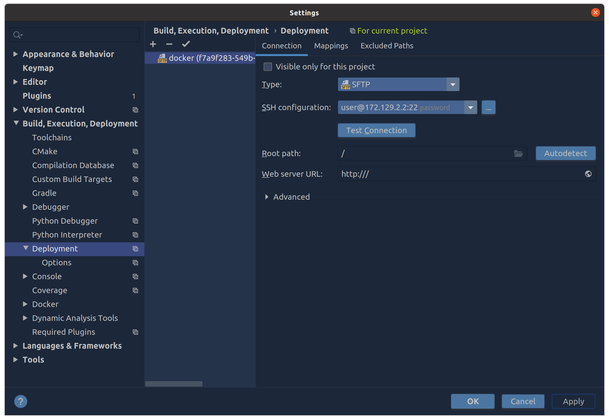
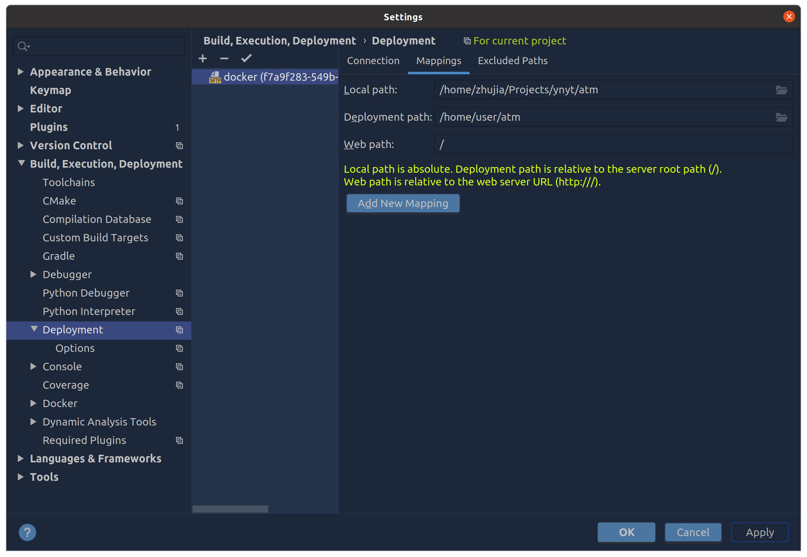
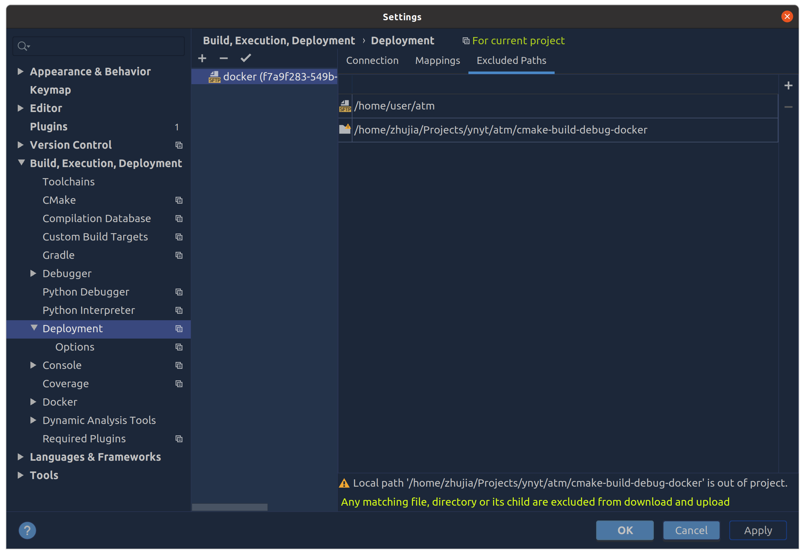

clion基于docker的开发环境配置
构建开发环境容器镜像
Dockerfile
FROM i386/ubuntu:18.04
MAINTAINER zhujia "magicletters@qq.com"
# replace default repo source
#RUN sed -i -e 's/archive\.ubuntu/mirrors.aliyun/' /etc/apt/sources.list
RUN export DEBIAN_FRONTEND=noninteractive; \
export DEBCONF_NONINTERACTIVE_SEEN=true; \
echo 'tzdata tzdata/Areas select Asia' | debconf-set-selections; \
echo 'tzdata tzdata/Zones/Asia select Shanghai' | debconf-set-selections; \
apt update && apt full-upgrade -y && apt install -y --no-install-recommends \
#根据实际需要添加依赖库
...
&& apt-get -qq clean \
&& rm -rf /var/lib/apt/lists/*
# Reconfigure locale
RUN locale-gen en_US.UTF-8 && dpkg-reconfigure locales
# Add group & user + sudo
RUN groupadd -r user && useradd --create-home --gid user --groups sudo user && echo 'user ALL=NOPASSWD: ALL' > /etc/sudoers.d/user
# set user password
RUN echo 'user:develop'|chpasswd
USER user
WORKDIR /home/user
ENV HOME /home/user使用docker-compose运行容器镜像
docker-config.yaml
version: "3.4"
x-defaults: &default
restart: unless-stopped
# 使用当前目录的 Dockerfile 来构建 docker 镜像
build: .
image: atm:latest
volumes:
# 把当前目录(源代码目录) mount 到 docker container 的特定目录，那个目录就是 docker 环境里面进行编译的工作区间
- .:/home/user/atm
networks:
- default
services:
atm:
<<: *default
container_name: atm-dev
hostname: "atm"
user: user
working_dir: /home/user/atm
# 需要改变 security_opt， 不然 gdb server 会跑不起来
security_opt:
- seccomp:unconfined
# 开启 ssh 服务，这样 clion 就能通过 ssh 连接进来了
# 同时通过 tailf 命令保持 container 不要退出的状态
command:
bash -c "sudo service ssh start && tail -f /dev/null"
# 手动配置网络， 这样就有固定的 ip 了
networks:
default:
driver: bridge
ipam:
driver: default
config:
- subnet: 172.129.2.0/24配置clion的remote toolchains
在Settings-Build,Execution,Deployment-Toolchains页面先新建一个Toolchains设置，名字叫_docker_（随便起名），类型选Remote Host。

在Settings-Build,Execution,Deployment-CMake页面的Toolchain下拉菜单里面选择_docker_。
由于我们使用Docker的Volume进行文件同步，所以不再需要使用Clion的SFTP。通过修改Settings-Build,Execution,Deployment-Deployment的配置进行更改。
当Clion成功连接到Container后，会自动创建一个对应于ToolChain名字的Deployment配置。我们需要把本地代码目录映射到容器里面的工作目录，然后禁用SFTP对容器里面的工作目录进行同步。


